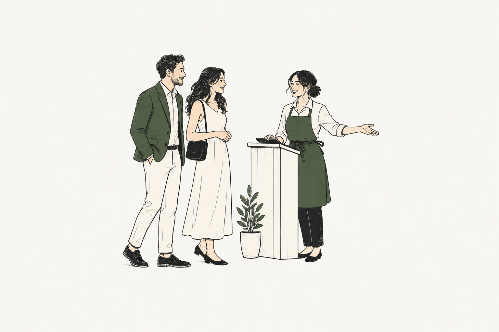

“Who’s next?”
Replace scattered notes with an organised waiting queue. Keep every party in view.
Less time managing tables.
More time making people feel welcome.

Neighbourhood favourites
✦Busy family restaurants
✦Cafés & casual dining
When the door keeps opening, the little things add up.
Give your team one simple place to keep service flowing.
Replace scattered notes with an organised waiting queue. Keep every party in view.
See available, dining, reserved and cleaning tables at a glance. Make the next move with confidence.
Match the party to the right table, so your team can focus on the welcome.
Three simple steps. One less thing to juggle.
Add your tables, seat counts and dining areas. Keep the layout familiar to your team.
Add a name and party size to the queue. See who’s waiting and what they need.
Assign an available table. Follow it through dining, cleaning and back to ready.
Tables, guests and the next welcome. All together.
A good evening starts here.
Choose “Seat at T1” to try a guest assignment.
The essentials that keep tables turning
and your team feeling in control.
Know what’s free, in use, reserved or being cleaned with easy-to-read table states.
Keep guest names, party sizes and waiting order together, ready for the next opening.
Bring tables together for a group, then split them back when the meal is done.
Keep the main room, terrace and private dining areas easy to navigate.
See dining time alongside table status to help plan the next seating.
A simple mobile interface keeps table management close, wherever service takes you.
Keep everyday seating simple, from your first walk-in to the last table of the night.
Manage waiting families and combine tables when the whole group arrives together.
Move smoothly from dining to cleaning to available, even when the pace picks up.
Clear answers, before you pull up a chair.
TablePing is a restaurant table management platform for managing walk-in queues, table availability and guest seating. It gives front-of-house teams a clear view of waiting parties and the dining floor.
Your team adds a guest name and party size to the waiting queue. When a suitable table becomes available, the host assigns the party to that table and updates its status to dining.
TablePing shows available, dining, reserved and cleaning tables. These distinct states help staff see which tables are ready for guests and which need attention.
Yes. TablePing supports merging tables to seat a larger party and splitting them back after dining. This helps hosts organise group seating without losing track of the individual tables.
Yes. Tables can be organised by areas such as main dining, outdoor seating and private rooms, so your team can navigate the restaurant more easily.
TablePing focuses on table management, walk-in queues and seating. It is not a billing or kitchen order system. Confirm any required POS integration with the TablePing team before adopting it.
Yes. The interactive demo uses sample guests and tables. Select “Seat at T1” to assign a waiting party, filter the table statuses, or reset the demo to start again. The demo does not connect to a live restaurant.
Let TablePing take care of the table details.
You take care of the people.